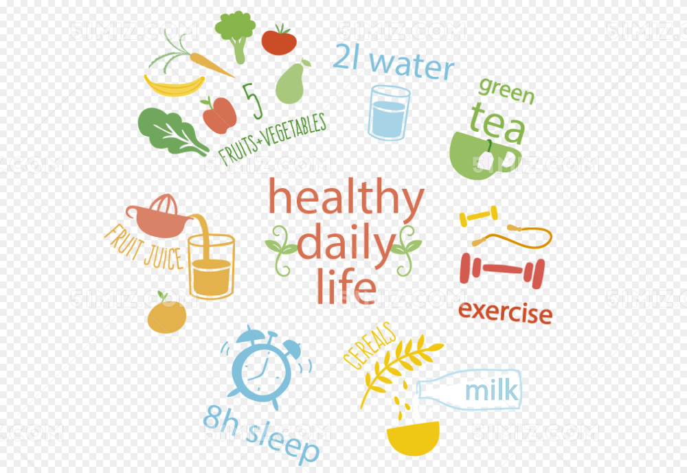

健康饮食


健康饮食是指通过合理的饮食结构和营养搭配，保持身体健康和良好的体态。
1.均衡的营养摄入
健康饮食应该包含适量的蛋白质、碳水化合物、脂肪、维生素和矿物质，以满足身体的各种营养需求。
2.多样化的食物选择
多种不同的食物可以提供不同的营养成分，保证身体获得全面的营养。
3.控制饮食量和食用频率
量的食物摄入可以避免过度摄入导致的肥胖和其他健康问题。
4.少食多餐
分散饮食可以帮助身体更好地吸收营养，避免餐后胃部不适。
5.多食新鲜水果和蔬菜
水果和蔬菜富含维生素和纤维，有助于维持身体健康和消化系统正常运作。